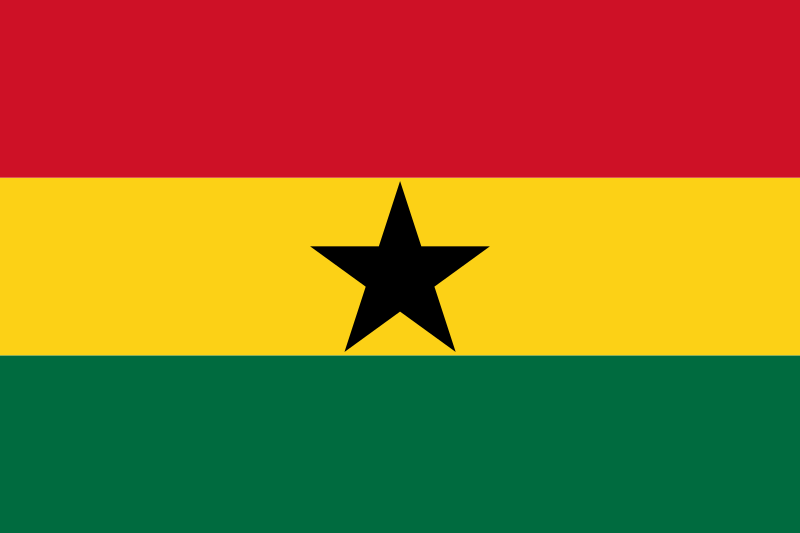
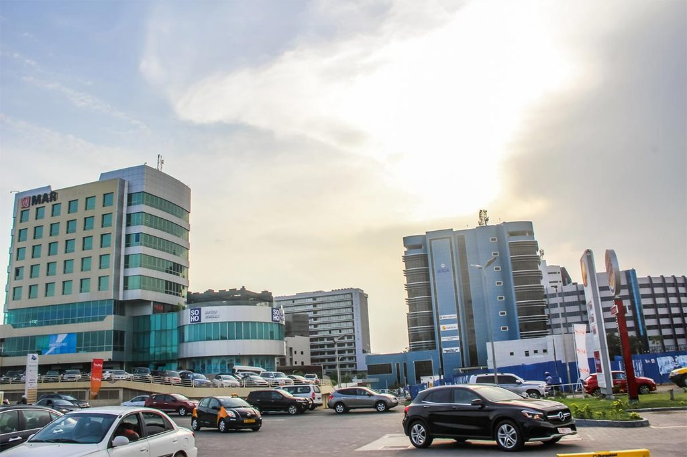
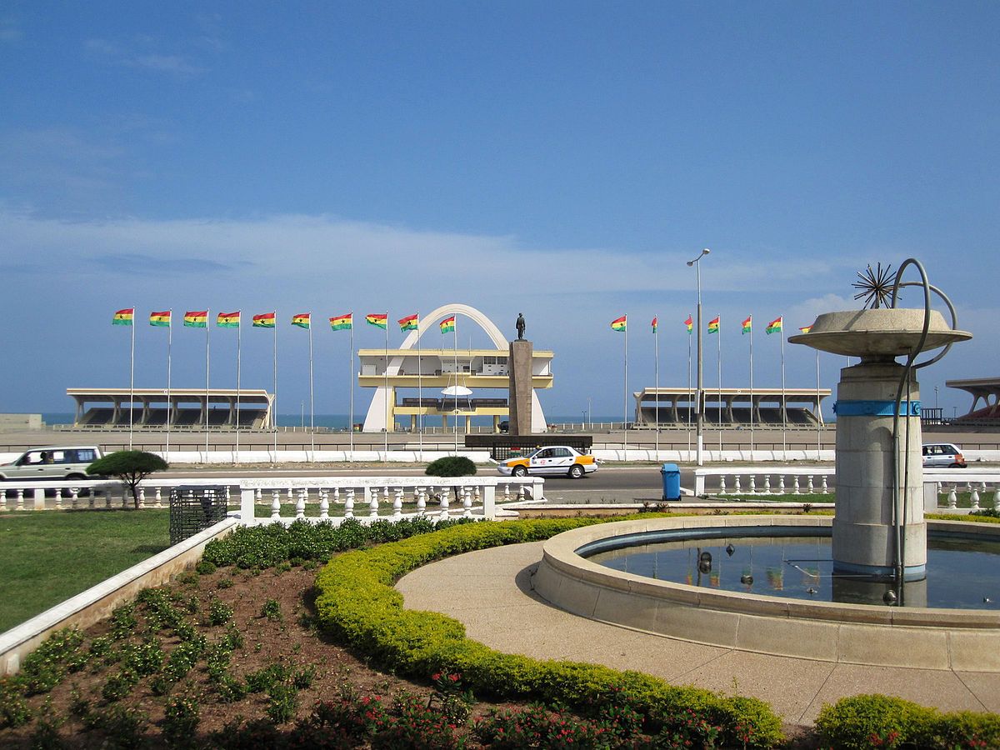
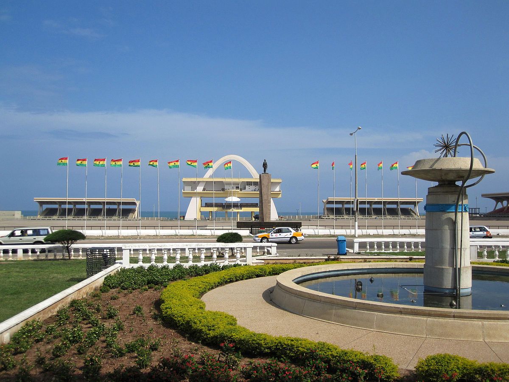
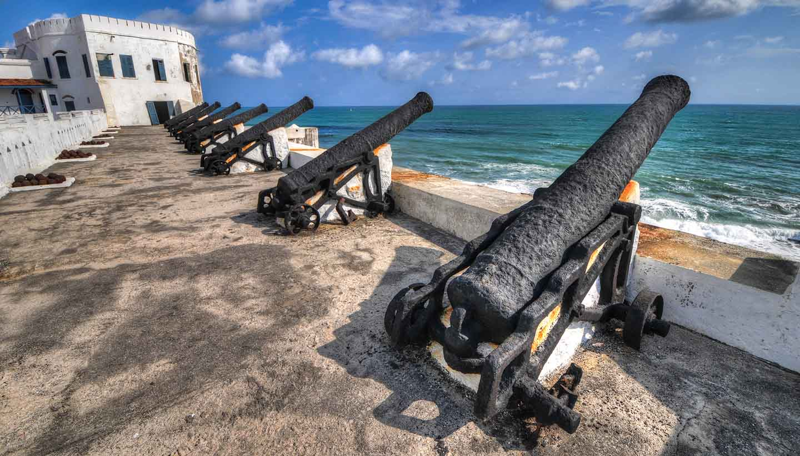
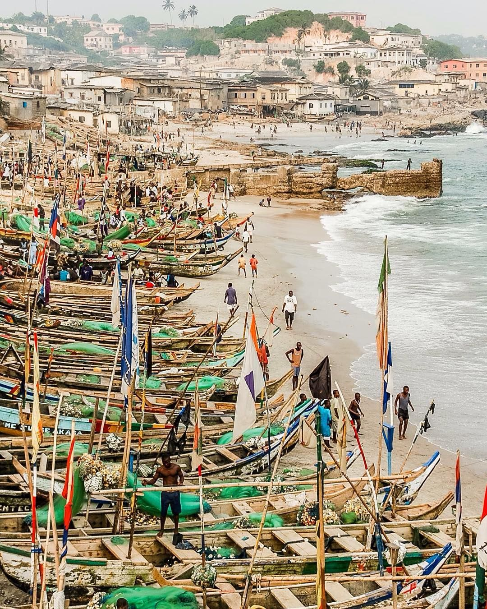
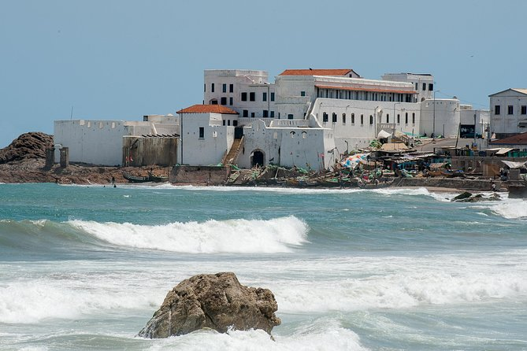
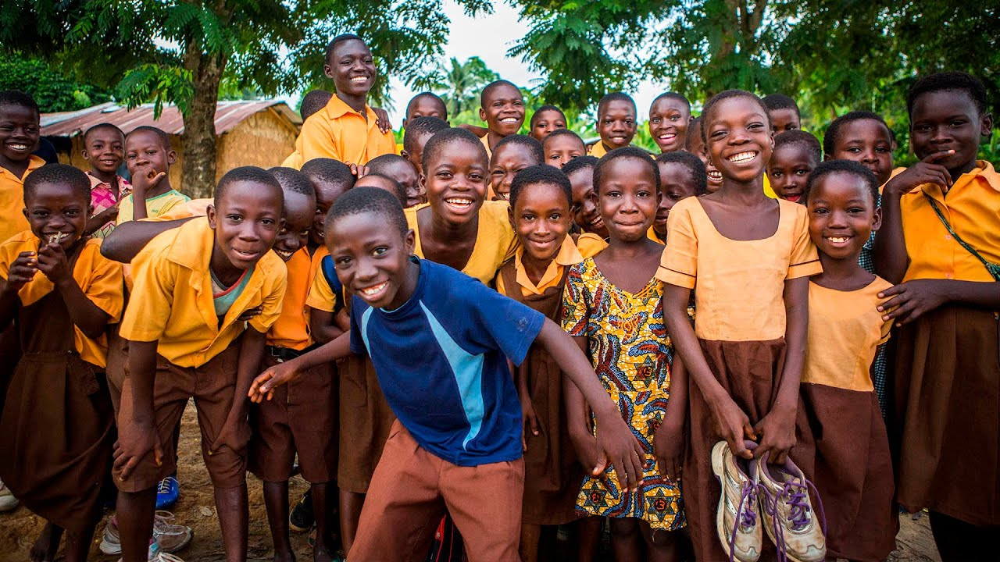
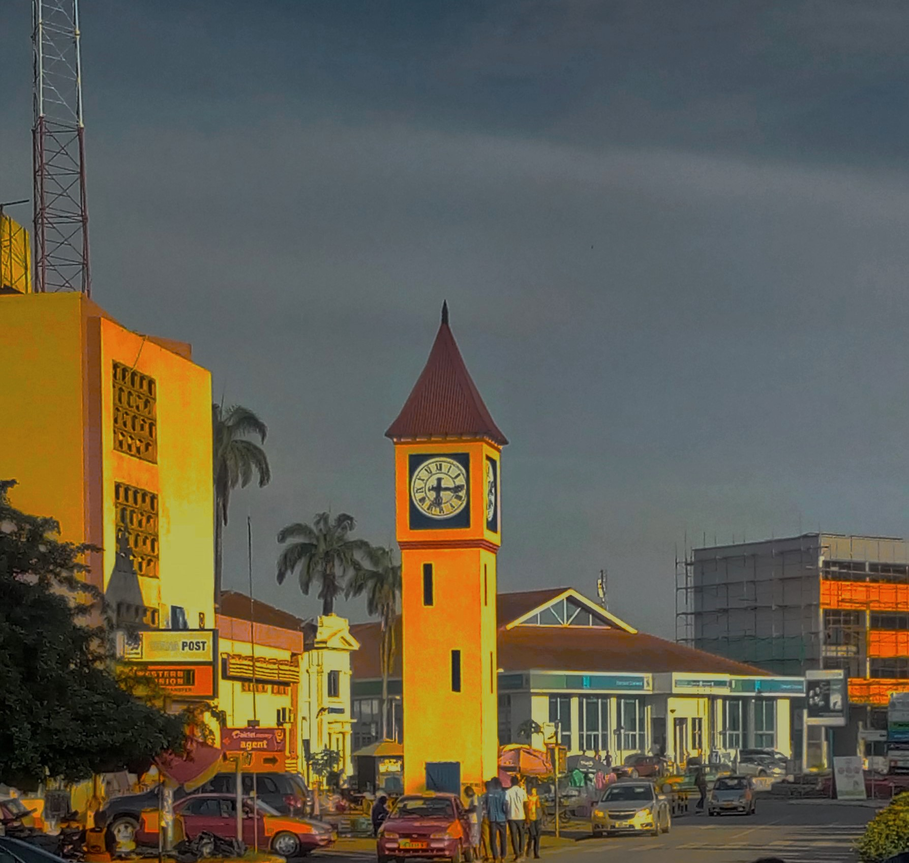

GHANA
Home
Page 1 myjoyonline
Page 2 google


ACCRA GHANA
Page 3 GHANA LATEST NEWS!
Republic of Ghana, is a country along the Gulf of Guinea and the Atlantic Ocean, in the subregion of West Africa
panning a land mass of 238,535 km2 (92,099 sq mi), Ghana is bordered by the Ivory Coast in the west, Burkina Faso in the north, Togo in the east,
the Gulf of Guinea and the Atlantic Ocean in the south. ,
The first permanent state in the territory of present-day Ghana dates back to the 11th century, the Bono State.
Numerous kingdoms and empires emerged over the centuries, of which the most powerful were the Kingdom of Dagbon
Ghana's population of approximately 30 million[17] spans a variety of ethnic, linguistic and religious groups.
According to the 2010 census, 71.2% of the population was Christian, 17.6% was Muslim, and 5.2% practised traditional faiths.

 

ELMINA CASTLE
Elmina Castle was erected by the Portuguese in 1482 as Castelo de São Jorge da Mina (St. George of the Mine Castle),
First established as a trade settlement, the castle later became one of the most important stops on the route of the Atlantic slave trade.
The Gold Coast, which is now Ghana, gained its independence in 1957 from Britain, and had control of the castle.
Trade between Elmina and Portugal grew throughout the decade following the establishment of the trading post under Gomes.
In 1481, the recently crowned João II decided to build a fort on the coast in order to ensure the protection of this trade,
which was once again held as a royal monopoly.
King João sent all of the materials needed to build the fort on ten caravels and two transport ships.
The supplies, which included everything from heavy foundation stones to roof tiles, were sent, in pre-fitted form, along with provisions for six hundred men.
Under the command of Diogo de Azambuja, the fleet set sail on 12 December 1481 and arrived at Elmina, in a village called Of Two Parts



ELMINA CASTLE
Kumasi (historically spelled Comassie or Coomassie and usually spelled Kumase in Twi)
is a city in Ashanti Region, and is among the largest Metropolitan areas in Ghana.
Kumasi is approximately 500 kilometres (300 mi) north of the Equator and 200 kilometres (100 mi) north of the Gulf of Guinea.
It is also called Oseikrom (Osei Tutu's town). Kumasi is the second largest city in Ghana, after the capital, Accra.
There is evidence that the area around Kumasi has been kept cleared since the Neolithic age and that the first human settlement was at Lake Bosomtwe.
Asanteman
The city rose to prominence in 1695 when it became capital of the Ashanti Confederacy due to the activities of its ruler Osei Tutu.
The ruler of Kumasi, known as the Asantehene, also served as ruler of the Confederacy,
with their 1701 victory over Denkyira the Asante confederacy became the primary state among the Ashantis.
Parts of the city, including the then royal residence, were destroyed by British troops in the Third Anglo-Ashanti War of 1874


Website created by Okyere Samuel Nicholas. A student of All nations University.
You can contact me on +233247657266 or +233549157379 or nicolaky@live for business